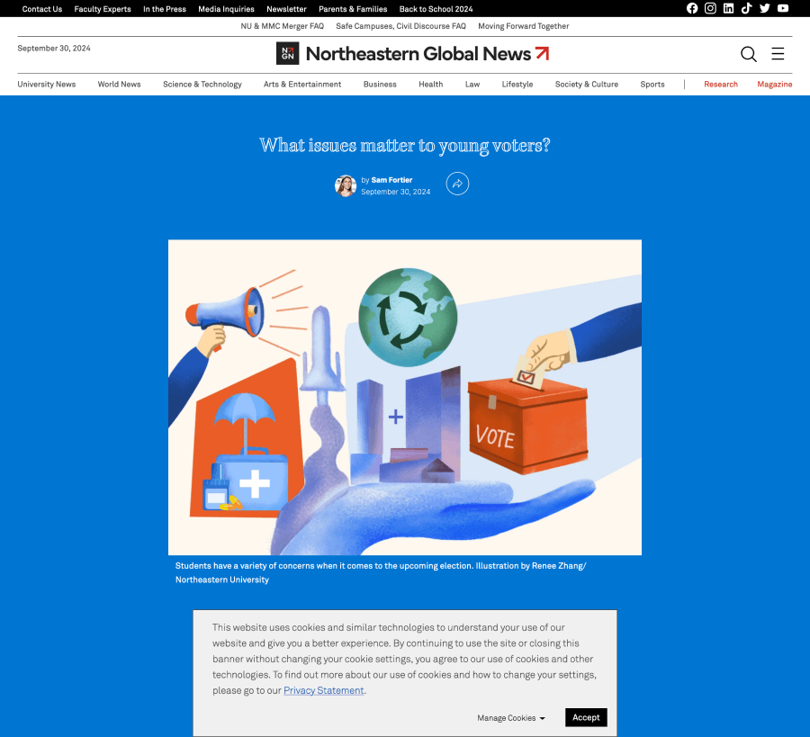
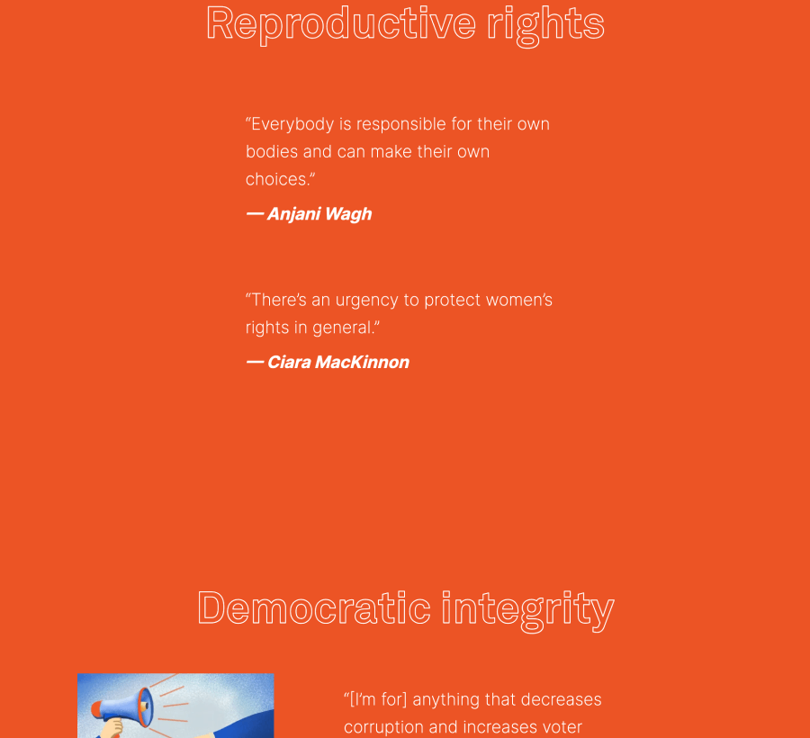
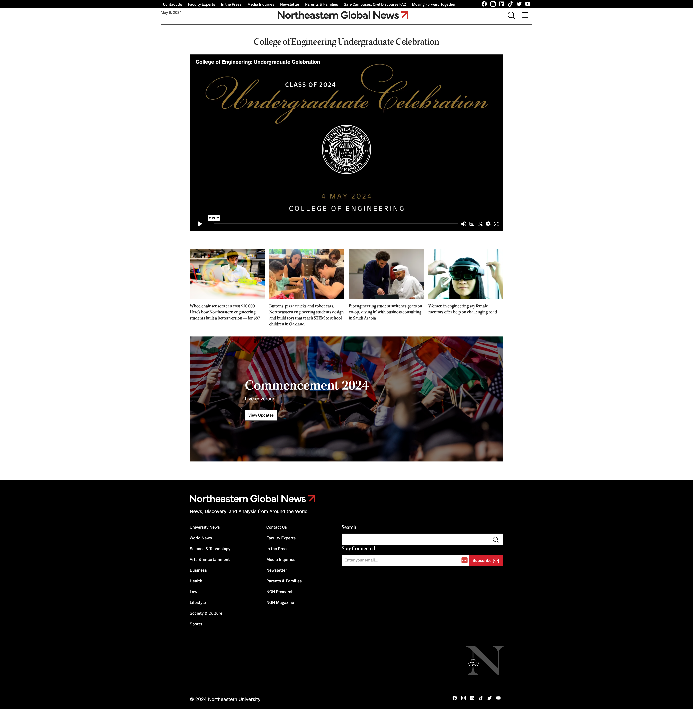
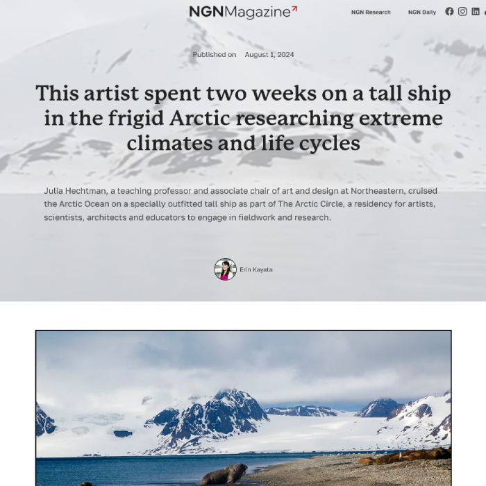
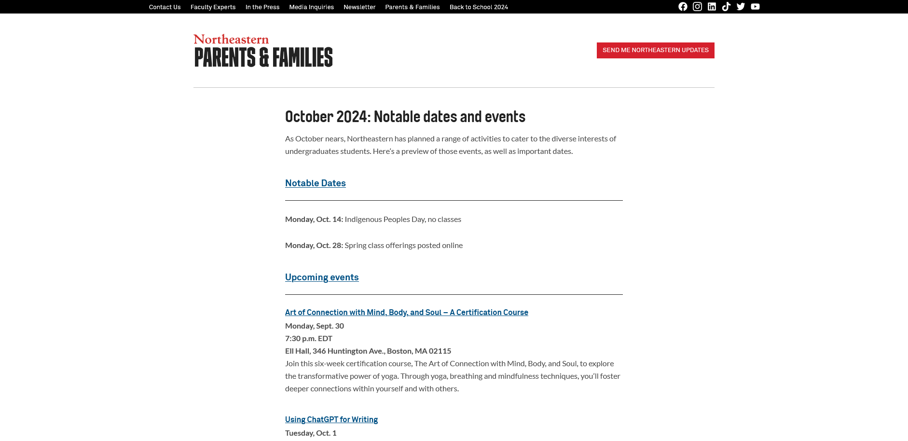
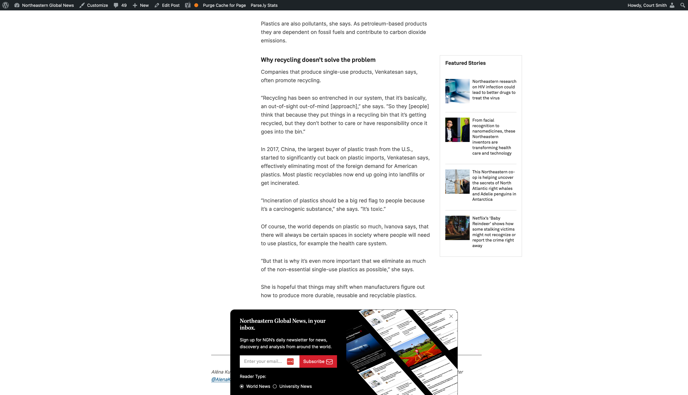
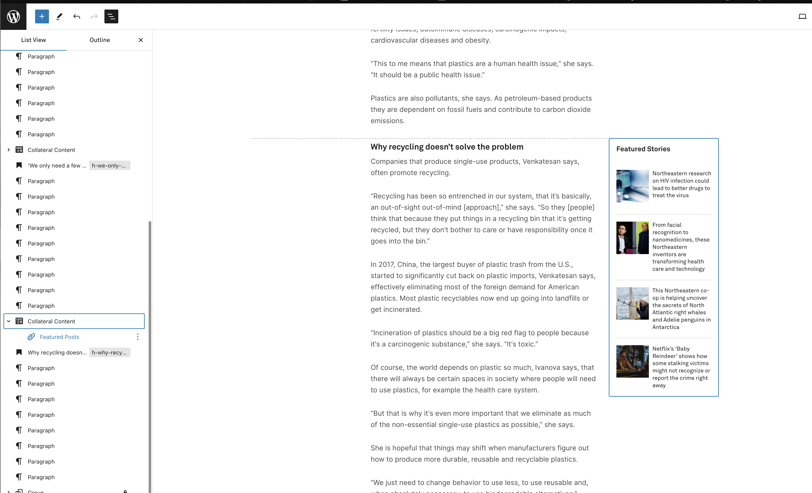

About

I'm Courtney "Court" Ellis Smith (he/him), a Web Developer focusing on Wordpress at Northeastern University. I create custom Gutenberg blocks, plugins, and forward-thinking sustainable solutions for ongoing projects. I also specialize in spinning up sites with semantic HTML5 and creating graceful and fluid mobile-first sites using CSS/Sass. (Like this one!) I love the ever-changing nature of the field—always something new to learn!— and the different mental modes of design/styling and problem-solving. On my days off, I enjoy reading, drawing, hiking, and exploring. I'm excited to help you bring your ideas to life!
Email me Github LinkedIn
Skills
Computational and Coding
- Semantic HTML5, CSS3 (including animations), Sass, JavaScript, React, PHP, NPM
- Cross-browser, mobile-first, fluid and responsive design for the web with a focus on accessibility
- IntelliJ, Jira, Atlas, Github, Git, Docker, Agile workflows
- Wordpress and Wordpress VIP, including custom post types, plugins, and blocks
- Drupal, BBIS, and BlackBaud CRM
- Adobe Target, Illustrator, InDesign, Photoshop, Dreamweaver
Language
- Japanese: Intermediate reading, writing, and speaking
- Spanish: Basic reading and writing
Work
Northeastern University
Northeastern Global News

Hosting expert-informed news and university happenings alike, Northeastern Global News is the product of Northeastern's Communications team. Built in Wordpress, it hosts a decade-worth of content as well as various microsites. I create custom plugins, post types, taxonomies, Gutenberg blocks, and uniquely designed pages to ensure that our content can be accessed around the clock as news breaks. Standout solo work includes creating the top and side navigations with a nav walker and footer design and developtment. In addition to the day to day maintenance and updates, I've also developed and executed our plan to transfer the site from WP Engine to Wordpress VIP, participated in a large-scale redesign, and guided multiple weekly deployments. Finally, I also develop and maintain our microsites NGN Magazine and NGN Research with others on the team.
How I made it happen:
- Researched, diagrammed, and developed a multi-layered nav walker to show categories of posts and then the 3 most recent posts within each category.
- Coded the side navigation's elements to populate dynamically and slide in on open.
- Used PHP to spin up the footer and styled with SCSS.
- Develop and update blocks with PHP, JavaScript, React, and SCSS.
- Continuously collaborate with other developers using Git, GitHub, and NPM.
- Designed a plan to navigate the site from WP Engine to Wordpress VIP, which included exporting the database, reworking Twig files (Timber) to PHP, upgrading to PHP 8, converting from multi to single site, learning VIP CLI, and running multiple tests of the entire process.
Young Voters Article
 A specialty article to highlight the voices of young voters around campus on a tighter timeline, I created a simple but fun design to showcase their thoughts and concerns.
How I made it happen:
- Worked with our Illustrator and Digital Media Director to create a design based off an inspiration article.
- Used JavaScript, GSAP, and ScrollTrigger to gracefully change the background color when you scroll.
- Reworked initial color palette slightly to ensure enough color contrast to meet WebAIM accessibility standards.
- Styled with SCSS to bring it all together.
Livestream Pages
To complement our coverage of Commencement, we decided to gather the live streams of the various ceremonies across the colleges and campuses into a series of pages on NGN. This was originally meant to be a long-term process and each page could be spun up a few days before the corresponding ceremony. Therefore, I created a spreadsheet with each ceremony name, embed link, and date (I was specifically given this project because I was told "you're the most organized person I know"—an honor). I made a plan to create each of the 20+ pages over time, but unfortunately the deadline was pushed up by about a week. I created a plan with a collegue, quickly trained them, and we stayed late to finish the pages that same day. They were extremely successful and brought in a large bump of traffic to our site and converted new readers.
How I made it happen:
- Created a design based on some initial ideas and feedback, styled the page, and set it to be generated based on the page slug.
- Built out an unsynched pattern to quickly pull in the same content on each page.
- Ensured consistency across all of the 20+ pages.
- Post-mortem: Reflected that this was better served by creating a custom post type, for a variety of reasons, and since I knew the pages performed well and would be used again the following year, I spent the time to create a custom plugin and post type and transferred the content over for future sustainability.
Arctic Ship Residency Article
For this specialty article, I wanted to emphasize the remoteness of the location, as Svalbard is quite off the beaten path! To do this, I incorporated a video of a boat ride through the arctic waters as the header and an existing block we have to animate a map to zoom in on the location (please note this accounts for the space in the screenshots).
How I made it happen:
- Reviewed the story and assets, and developed then honed a design with the team.
- Styled the page with SCSS, ensuring mobile compatibility.
Parents Plugin
As part of an initiative to engage various types of visitors to our site, I was tasked with creating a structure to support others in making additional pages for the parents page. I also created a separate custom taxonomy for audience type as related to this goal.
How I made it happen:
- Reviewed the existing design of the parents page, including colors and fonts, and drafted something against the kinds of content we expected to host.
- Created a custom post type with sample content in PHP.
- Designed the inidvidual pages and iterated on feedback.
- Wrapped it all in a custom plugin, tested, and deployed!
Video Pages

Featured Stories Block
 Brown University
Giving Tuesday 2021

I built the website for Giving Tuesday, which serves as the digital homebase for this fundraising event. The day after Cyber Monday, Giving Tuesday has become a major fundraising day for the university. This year was no exception as it raised nearly $2 million from 3,056 donors. The site itself hosted 4,325 visitors who spent 3 minutes there on average. 48% of them were on mobile.
How I made it happen:
- Interpreted flat designs from the graphics team for a variety of screen sizes
- Built the site out locally in mobile-first, semantic HTML5 and Sass
- Segmented and loaded into our content management system (BBIS)
- Evaluated the style guide for accessibility with color contrast
- Tested locally and in Browserstack
- Served as the primary project manager, ensuring all deliverables arrived in a timely fashion
- Integrated internal and external feedback from critiques
- Connected and assessed real-time charts
- Executed a multi-state launch process with before, during, and after presentations of the site
Bruno Gives Back Day 2021

The Bruno Gives Back Day site I built is especially geared to promote competition across Brown Bears sports teams. This year, we designed the graphs to accentuate the results of the men's versus the women's teams. 3,785 donors supported the Brown Bears on this giving day.
How I made it happen:
- Interpreted flat designs from the graphics team for a variety of screen sizes
- Built out new graphs to spec that are mobile-first and fully fluid
- Coded semantic HTML5 and Sass, creating the mobile-first site locally
- Segmented and loaded into our content management system (BBIS)
- Tested locally and in Browserstack
- Iterated closely with the Sports Foundation team to produce and receive all deliverables (including written content and plugins)
- Integrated internal and external feedback from critiques
- Connected and assessed real-time charts
- Executed a multi-state launch process with before, during, and after presentations of the site
Brunonians Pay It Forward Day 2021

Every spring I build the Brunonians Pay It Forward Day site to spark enthusiasm for this global day of goodwill. Brown leverages the site to drive alumni to "pay it forward" by giving back to support current students. This giving day raised $1.8 million from 1,741 donors. Overall, 2,325 users visited the site.
How I made it happen:
- Interpreted flat designs from the graphics team for a variety of screen sizes
- Developed the site locally in mobile-first, semantic HTML5 and Sass
- Evaluated the style guide for accessibility with color contrast
- Loaded different parts of the code into the content management system, mindful of user access and reusability
- Ran a testing regimen on a variety of devices
- Managed the project to ensure various deliverables from different teams arrived in a timely fashion
- Integrated internal and external feedback from critiques
- Connected and assessed real-time charts
- Executed a multi-state launch process with before, during, and after presentations of the site
Giving Tuesday 2020

Giving Tuesday 2020 raised nearly $4.6 million from 4,935 donors. The website had one of its highest rates of audience penetration, with 4,243 users visiting the site at least once. This achieved the day's goal of engaging more donors than ever before.
How I made it happen:
- Prototyped a condensed, single-page version of the giving day site, reviewed it with graphic design, and devised a development plan to make it reusable going forward
- Interpreted flat designs from the graphics team for a variety of screen sizes
- Developed the site locally in mobile-first, semantic HTML5 and Sass
- Evaluated the style guide for accessibility with color contrast
- Loaded different parts of the code into the content management system, mindful of user access and reusability
- Ran a testing regimen on a variety of devices
- Managed the project to ensure various deliverables from different teams arrived in a timely fashion
- Iterated on internal and external feedback from critiques
- Integrated real-time results charts and social sharing
- Launched the before state early, and managed the on-the-dot switchover for giving day go-live
- Completed the site by activating the day after state
Bruno Gives Back Day 2020

Iterating on last year's design to build brand recognition, the design highlighted competition amongst different Brown Bears teams. The site included multiple phases to build excitement and updating tallies as gifts rolled in. 4,538 supporters gave to their favorite team.
- Interpreted flat designs from the graphics team for a variety of screen sizes
- Coded semantic HTML5 and Sass, creating the mobile-first site locally first
- Segmented and loaded into our content management system (BBIS)
- Ran a testing regimen on a variety of devices
- Iterated closely with the Sports Foundation team to produce and receive all deliverables before they're needed, including written content and plugins
- Integrated internal and external feedback from critiques
- Connected and assessed real-time charts
- Executed a multi-state launch process with before, during, and after presentations of the site
Giving History Page

Having a page where donors could view their giving history had long been an item at the top of our users' wishlist. For this long-desired feature, I wrote the front-end code for a giving history page, allowing each donor to log in and see their support of Brown over the years.
How I made it happen:
- Partnered closely with our back-end developers to ascertain technical requirements
- Designed the page to be elegant, easy to scan, and effective
- Wrote mobile-first, fluid tables that maintained their integrity, design, and readability on any screen size
- Tested and updated based on feedback
- Delivered required code and assets to the developers for full integration
Education
Georgia Institute of Technology
- Bachelor of Science in Computational Media
- Minor in Japanese
Rhode Island School of Design
- Continuting Education Certificate: Interactive Design
- Adobe PhotoShop
- Adobe InDesign
- Web Architecture
- Applied Color
- Interactive Design: Introduction
- Cascading Style Sheets
- Design
- JavaScript
- Digital Design Techniques
- Interactive Design: User Interface